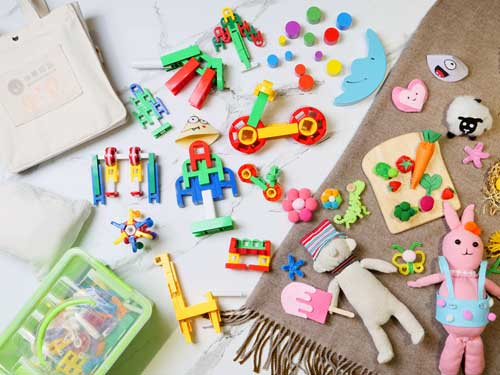
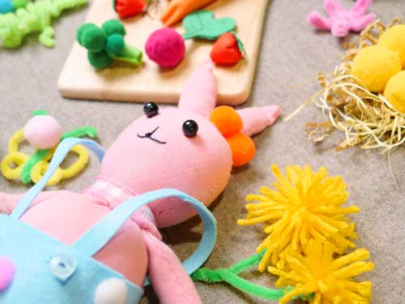

小熊森林“托幼銜接成長班”由台灣40年早幼教品牌團隊研發，以兒童發展醫學為基因，透過遊戲與引導，僅需1-3個月的時間，幫助 2-3 歲寶寶輕鬆習得上幼兒園所應具備的能力。
測評後，寶寶還有些“能力不足”嗎？最大的原因是缺乏團體生活經驗，小熊森林為寶寶補足７個維度能力，幫助快速適應幼兒園。

“托幼銜接成長班”有3大學習軸心：線上∕線下中文課程、英文課程與家園任務課程。 “家園任務”課程，提供教具、教法、任務與里程碑標準，讓媽媽或其他家人在家也能用正確專業的方式引導寶寶。 跳脫全日半日班限制，自由搭配出最適合您與寶寶的學習方程式。
| 星期一 | 星期二 | 星期三 | 星期四 | 星期五 |
|---|---|---|---|---|
| 主題課程 | 認知思維 | 主題課程 | 認知思維 | 主題課程 |
| 社會情緒 | 藝術手作 | 社會情緒 | 藝術手作 | 社會情緒 |
| 寶寶學習組 邏輯建構包
認知益智包
藝術情緒包




|
| 里程碑檢核 |
| 親子任務 |
| Monday | Tuesday | Wednesday | Thursday | Friday | |
|---|---|---|---|---|---|
| 2:00 - 2:30 | Daily Story | Hands on Fun | |||
| 2:30 - 3:00 | Sing & Dance | ||||
| 3:00 - 3:30 | Phonics | Picture Reader | Phonics | Picture Reader | |
| 3:30 - 4:00 | Workbook Time | ||||
| 4:00 - 4:30 | Snack Time & Go Home | ||||
| 教材搭載圖形辨識 | 智能托育系統 |
|---|---|
| 家長APP搭載“圖形辨識技術”，掃碼教材，就可以看到寶寶在校上課影像，寶寶的每個進步都讓你看的到。 | 家長APP連動校內托育系統，每日消毒與各種學習“在線記錄”，安全保證，一手掌握寶寶在校生活。 |

| 超能組合 | 發展組合 |
|---|---|
| 測評 | 測評 |
| 校園線下 120 堂 | 校園線下 16 堂 |
| 家園任務 16 堂 | 家園任務 16 堂 |
| 線上課程 100 堂 | 線上課程 100 堂 |
| 智能個人化教材 | 智能個人化教材 |
| 結業活動 | 結業活動 |
| 基礎 | 重點 | 紮實 |
|---|---|---|
|
不怕生 群體融入 能自己獨立完成生活行為 習慣更多大肢體運用 |
||
|
大肢體運用靈活 精細動作較標準 不排斥與他人一起做任務 |
||
|
認知提升 語言表達順暢 精細動作熟練 |
||
寬廣活動空間、芬蘭原木遊樂場、專業感統軟墊、寶寶球池、攀岩場、音樂廣場、藝術創作教室、寶寶廁所和家事區等等，完全針對2-3歲寶寶發展而設計。
上幼兒園前，2-3歲寶寶應該要具備哪些能力呢？如果寶寶還沒學會，會產生哪些問題？托幼銜接班的老師會如何引導呢？


{kind=link}
{kind=link}